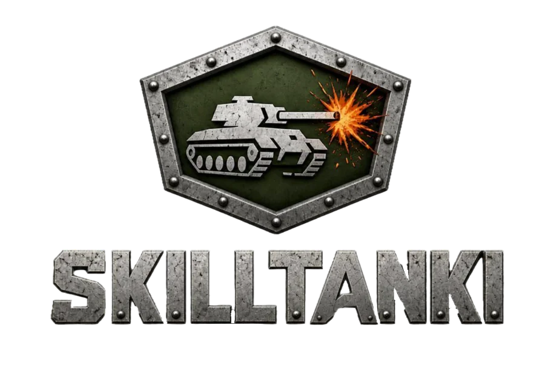
A browser tank arcade in the spirit of the classic: the same angular hulls — Wasp, Hunter, Titan, Dictator — the cozy “box” maps, and that feeling of a heavy machine on suspension. Open the page, and a few seconds later you're in battle.
The project wasn't born from “let's make a tank game”. It was born from very specific grievances familiar to anyone who played the original.
In 2020 browsers switched Flash Player off for good, and the classic client had physically nowhere left to run. Here there is nothing to install: the game opens in any modern browser from a plain link — on a home PC, a laptop, a work machine without admin rights.
Fifteen years of updates changed the original beyond recognition: different visuals, different physics, different spirit. There is no official way back — the “2010 classic” simply stopped existing as a product. This project carefully recreates it: the same hulls, the same guns, the same tank behaviour on bumps and ramps.
Players spent years building their own maps — the original's updates buried them along with the old format. Here the classic collection is preserved (91 maps, summer and winter versions included), the format lives on, and a map editor ships with the game — lost maps can be rebuilt from memory and screenshots, new ones from scratch.
Supplies were bought with crystals: whoever had the wallet had permanent double damage. Here there is no paid content at all — boosts are infinite and free for everyone, and the balance is finally tuned around equal players, not around a shop.
In the original, weeks of farming stood between “I want the Railgun” and “I bought the Railgun”, and team modes unlocked by rank. Here everything — modes, hulls, turrets, paints, maps — is available from the first second. The game starts with the game.
Registration, e-mail, password, the fear of losing a levelled-up profile if the project shuts down. Here there is nothing to lose and nothing to set up: a call sign — and into battle. A ten-minute lunch-break session is a perfectly valid scenario.
Matchmaking was a lottery, and the classic never offered a room “for our people only”. Here a private password-protected room is created in two clicks — your own server for the evening, like LAN parties back in the day.
The outcome of a battle is judged by an impartial referee: damage, speed and hits are verified the same way for everyone, so “clever” clients give no advantage.
There is no account system, and that is a deliberate decision, not an unfinished feature. No e-mails, passwords, confirmations or recoveries. You type a call sign — any name you want to be known by in battle — pick a tank and drive off to fight.
The game is completely free: free to play in the literal sense, no asterisks. There is no progression ladder either: every mode (including Assault and Capture the Flag), every hull, turret, paint and map is open from the first second.
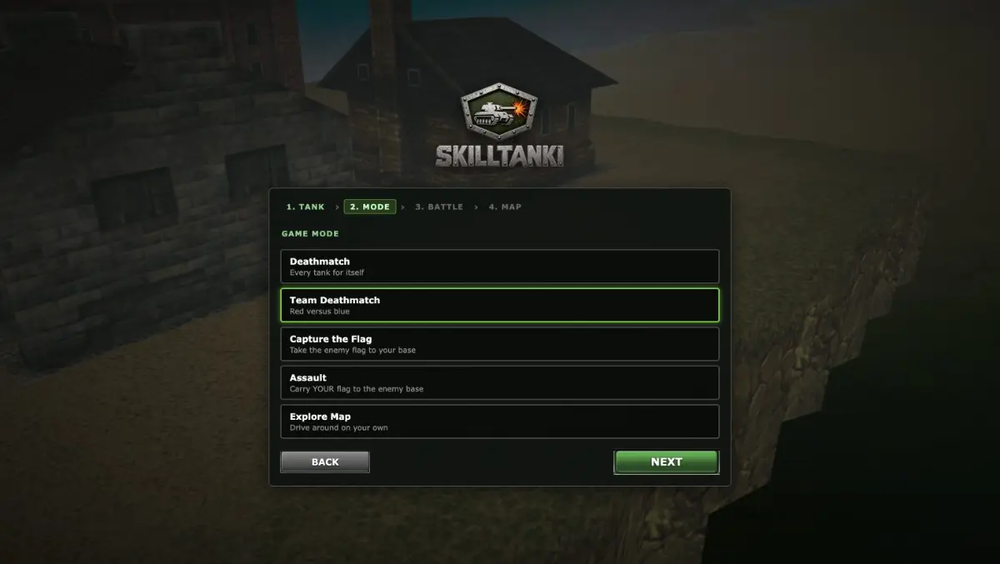
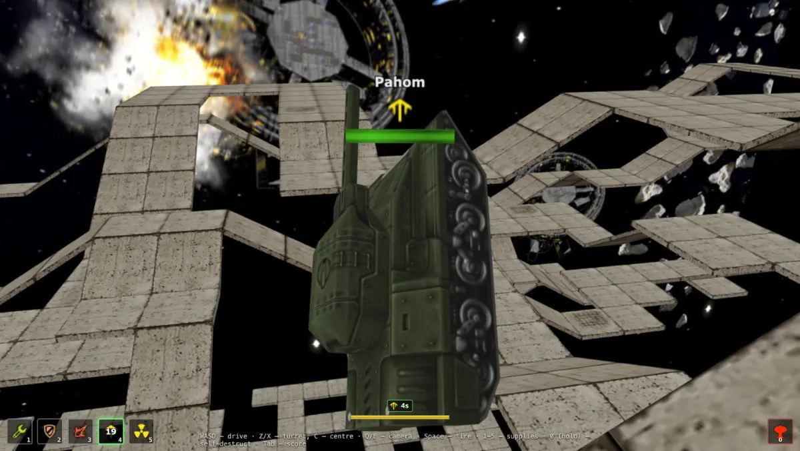
In the 2010 original, supplies were bought with crystals, and whoever had the thicker wallet fired double damage without pause. Here there is no paid content whatsoever:
Repair kit — instantly repairs the tank.
Double armour — halves incoming damage for a while.
Double damage — strengthens your shots for a while.
Nitro — a noticeable boost to speed and acceleration.
Nuclear energy — instantly readies the gun and speeds up its reload.
All of it is infinite and free for every player. The only limiter is the cooldown after use, identical for everyone. Supplies stopped being merchandise and became tactics: the question is no longer “did you buy it”, but “did you press it in time”.
Since everyone is equal in equipment, the only way to win is by playing. The balance is tuned precisely for that:
The result: the top of the scoreboard goes to whoever drives better, shoots straighter and picks the moment smarter — not to whoever paid longer.
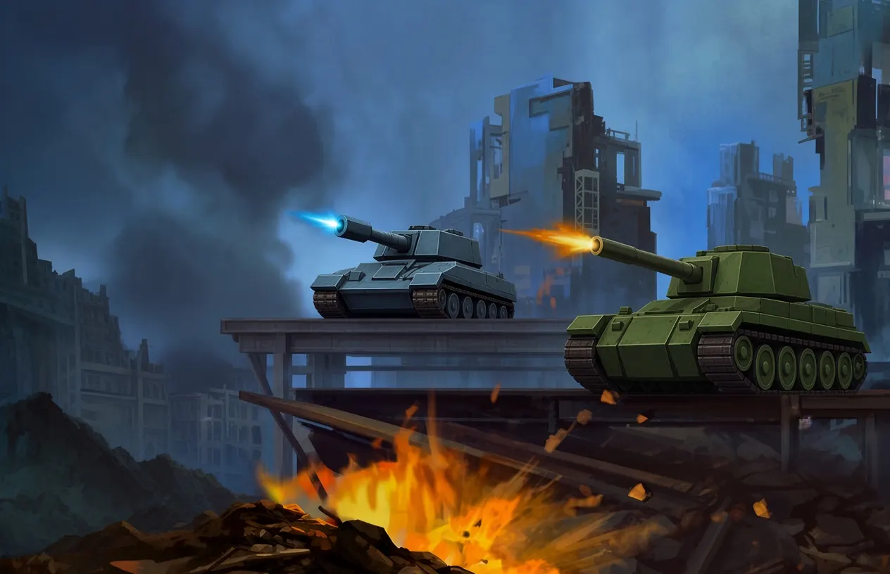
In the original you had to grow into team modes by rank. There is no ladder here: Assault and Capture the Flag are available immediately, like everything else — any mode, any map, any tank from the first launch.
Every tank for itself. The classic meat grinder.
Red versus blue, team score.
Take the enemy flag to your base. Available immediately, no conditions.
The mirror task: carry YOUR flag to the enemy base. Also open from the start.
No fighting, no score: just drive around and look at any map. A mode for walks, screenshots and learning the cover.
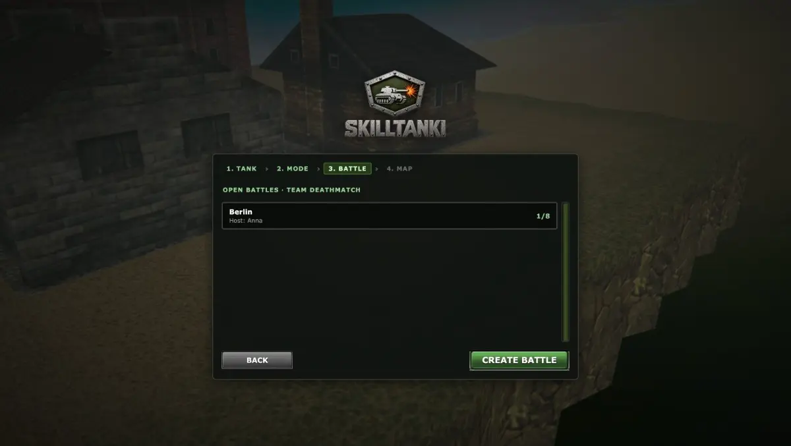
Solo vs bots — an offline battle against computer tanks; their number is adjustable, down to none at all. Perfect for learning a gun or warming up.
Multiplayer — a room for live players, never any bots. Team modes are always about live people.
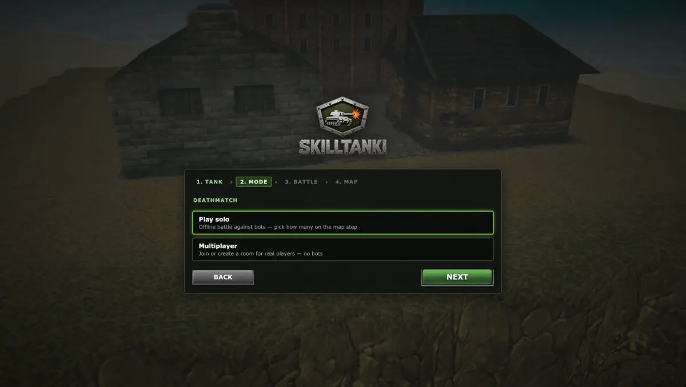
Open room — appears in the shared battle list; anyone sees it, picks a side and joins. That's how you meet random opponents.
Private room with a password — marked with a lock in the list; only those you gave the password to can enter. The password never shows anywhere — not in the link, not in the list. If the connection drops or the page reloads, you return to your own tank without losing the score.
The classic line-up, from wasp to mammoth. Every hull is open from the first second — pick the one that matches how you drive, not how long you've farmed.
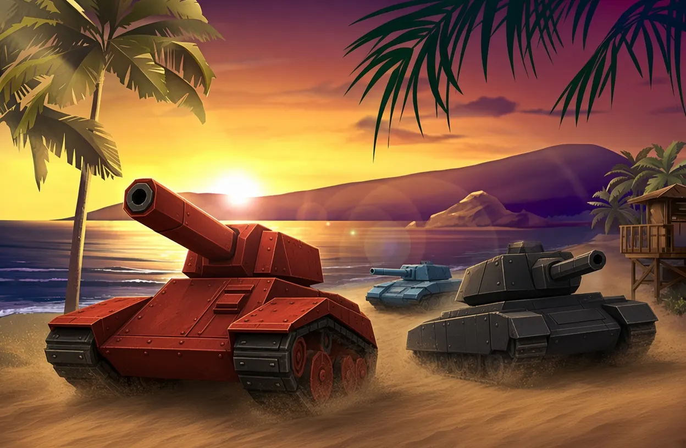
The lightest and fastest; a glass feather that lives by manoeuvre.
A bit sturdier and more solid than the Wasp, still very nimble.
The golden mean: speed, armour and weight in balance. The textbook “first tank”.
Wide, stable all-rounder; hard to flip, pleasant on rough ground.
Tall hull with the turret mounted high: sees over cover, but is seen too.
Heavy and unhurried, soaks up a lot of damage.
The slowest and the toughest; a fortress on tracks.
Nine guns are nine different answers to the question “how exactly does the damage arrive”. The difference between them isn't in numbers but in the very mechanics of the shot.
The shot lands instantly, exactly where the barrel points the moment you press. No projectile flight: press — hit (or miss). Medium damage, medium reload, works at any range — the benchmark the rest are measured against.
The opposite: a plasma bolt really flies at finite speed, and you need to lead the target. In return it bounces off walls — many times in a row. The only gun that shoots around corners: learn the map's geometry and you reach the enemy where he thought he was safe, without ever showing yourself.
Instant like Smoky, but preceded by a long charge with a growing glow on the muzzle that everyone sees. The beam pierces everyone lined up on its path: each next target takes less, but one shot “down the queue” drops two or three at once. The biggest single hit in the game, the longest price for a miss, total helplessness while charging. A gun of cold calculation.
A fast-firing double-barrel spitting slow plasma alternately from two barrels; small damage per shot, but the stream is almost continuous — a gun of close-range pressure.
A high-explosive: the shell flies and explodes over an area, hitting everyone near the impact point; a direct hit isn't required — you can aim at the wall by their feet — but standing next to your own blast hurts too.
Not a shot but a continuous stream while you hold the trigger: short range, an energy bar that drains. It sets the enemy on fire — he keeps burning and taking damage after escaping the stream, and while burning, any damage hurts him more. “Ignite and finish”.
Firebird's twin in mechanics, its opposite in effect: a frozen enemy reloads noticeably slower. Freeze hits softer, but breaks the enemy's tempo: his Railgun, his Thunder, his Smoky — all delayed. A gun of control, not damage.
The beam locks onto one target: an enemy gets drained (and part of what's drained comes back to you as health), an ally gets healed. In team battles Isida turns a player into a front-line medic.
Hip fire — a quick jab without aiming, so you're not helpless in a brawl. Scoped — hold aim: the camera drops to the barrel and zooms like optics, the tank stands still, and the longer you hold, the harder the shot charges — at full charge it's Railgun-level damage at the longest range in the game. While the sniper aims, everyone sees his laser. A duel of attention.
Fifty-three summer maps, and thirty-eight of them have a winter version — the same walls and ramps, but in snow. Any of them can be opened in Explore mode and driven around without a single shot.
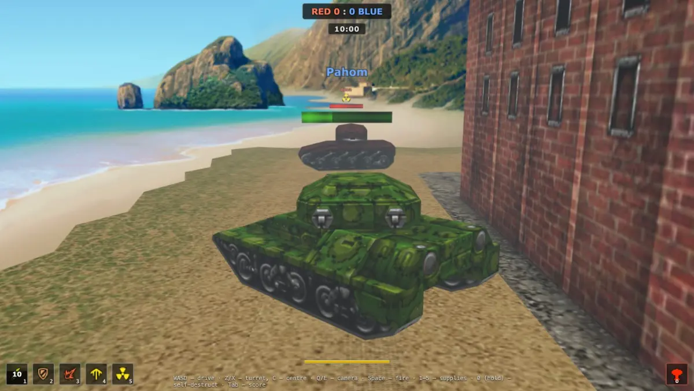
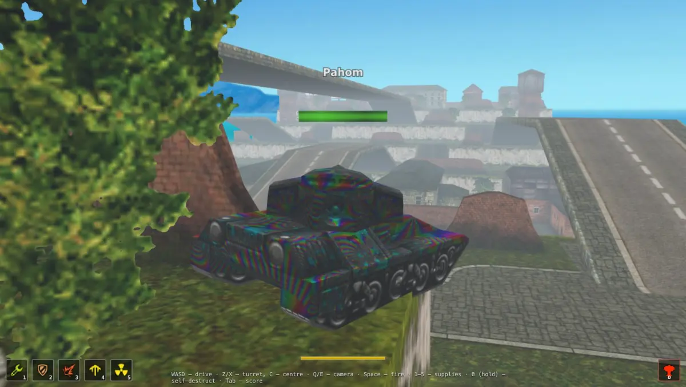
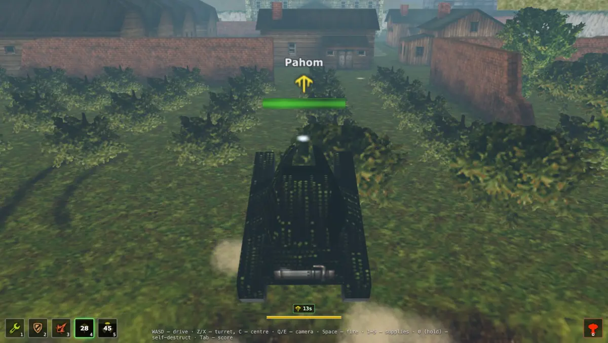
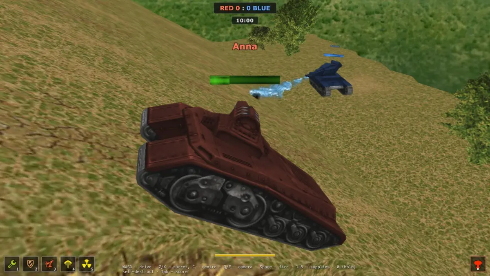
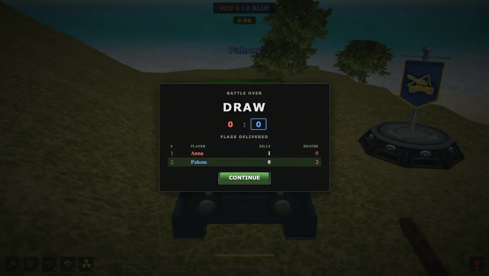
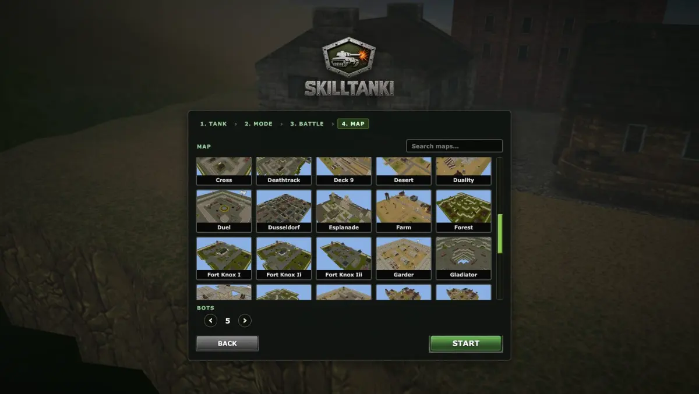
Paint is pure cosmetics and self-expression: it does not affect armour. From plain colours to signature skins — all free, all unlocked. In team battles a team can still be told apart by the classic red and blue.
As in the original, no mouse is needed. The camera always stays behind the tank.
The mobile version installs straight from the browser as a Progressive Web App: open the link, tap “Add to Home Screen”, and SkillTanki gets its own icon and runs full screen like a regular app.
No Google Play. No store account, no regional restrictions — the game does not depend on whether the store is available in your country.
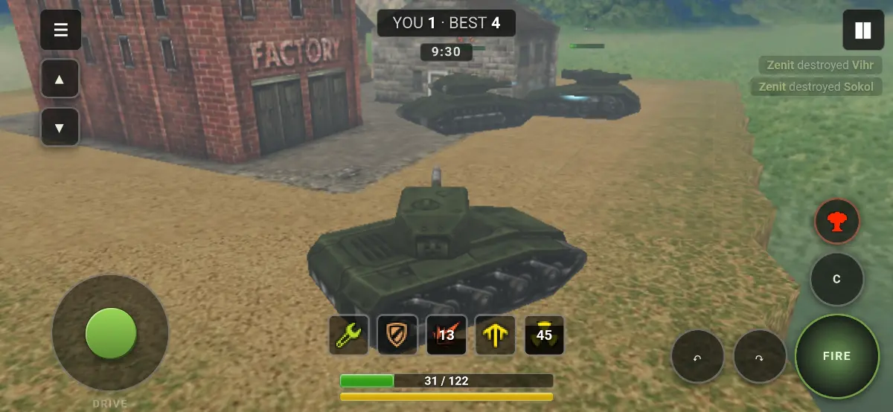
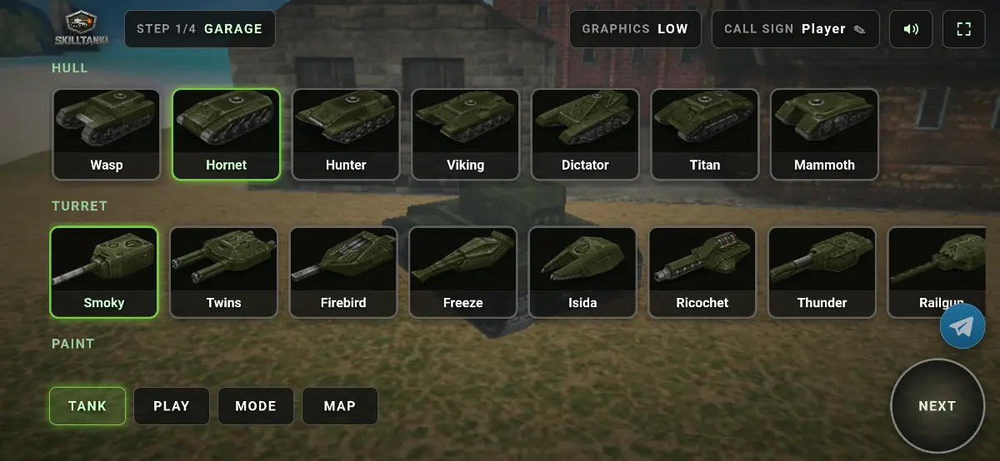
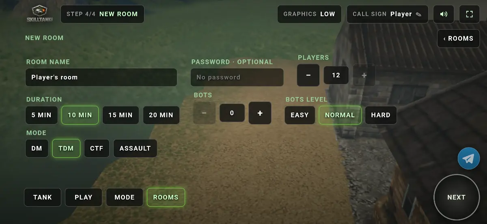
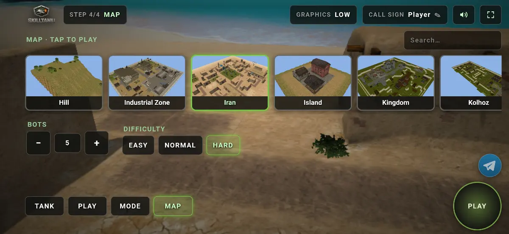
The mobile PWA supports gamepads as a third way to play, next to touch and keyboard. Any controller with a standard layout works: DualShock / DualSense, Xbox, Switch Pro, most Bluetooth pads for phones — and the Steam Deck's built-in controls. Connect over Bluetooth or USB; nothing to configure, the game takes the first connected pad.
All three inputs work at the same time. Touch the pad and the on-screen buttons fade away; touch the screen and they come back. In menus the pad behaves like a keyboard: D-pad and left stick move the focus, ✕ confirms, ○ cancels.
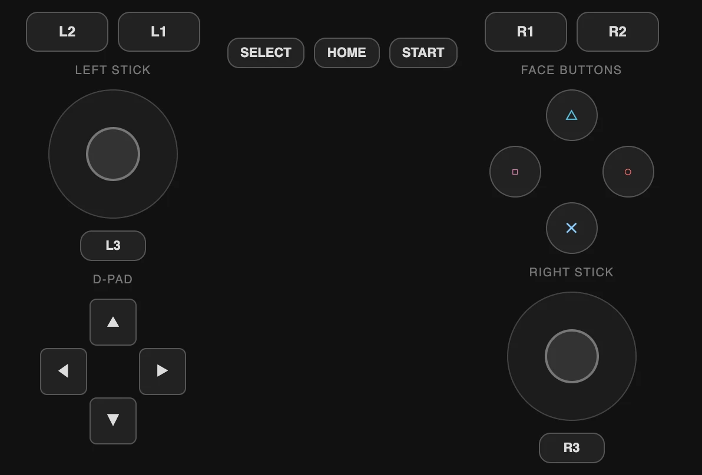